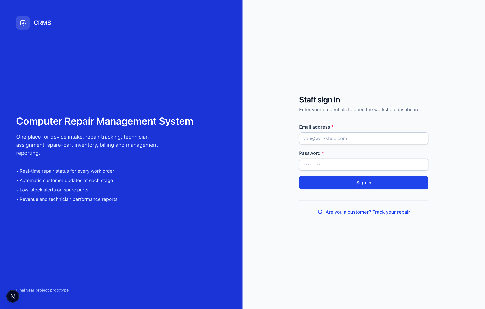
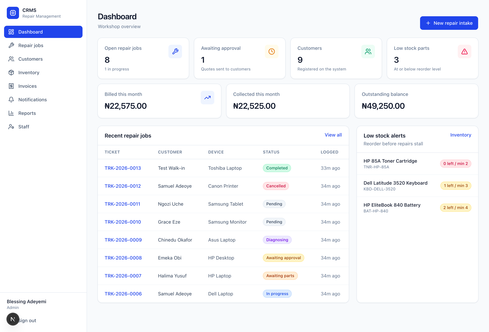
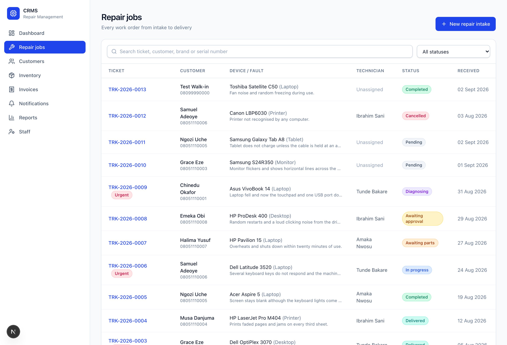
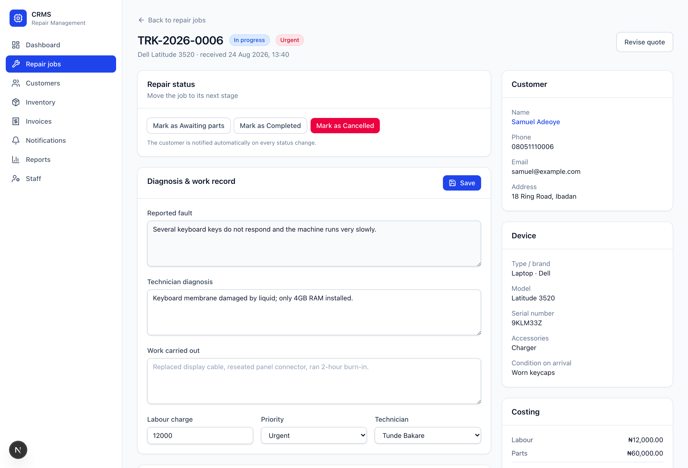
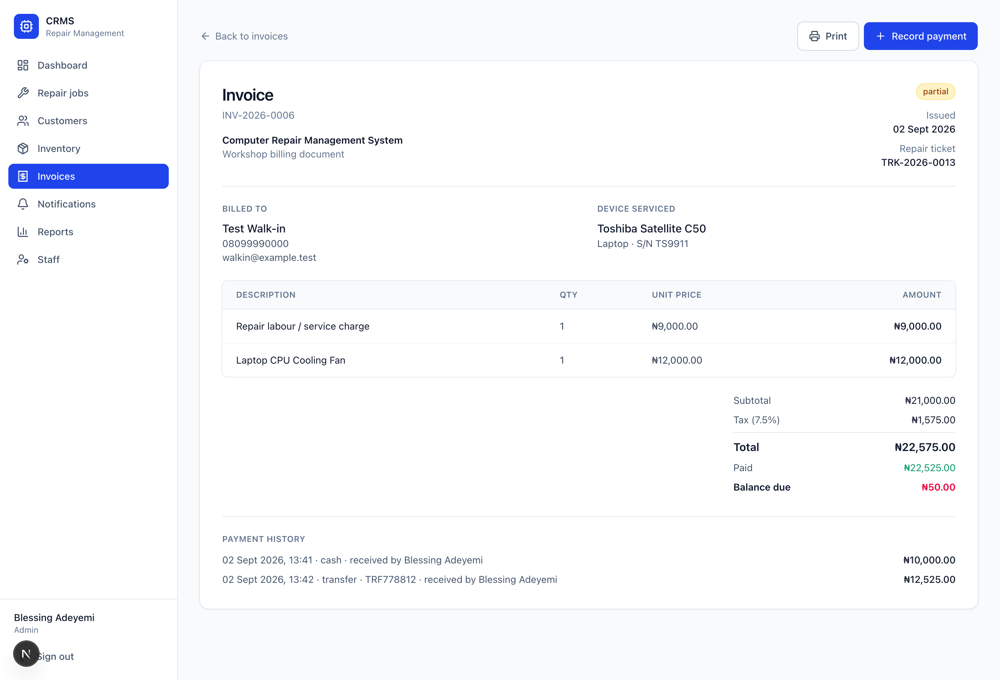
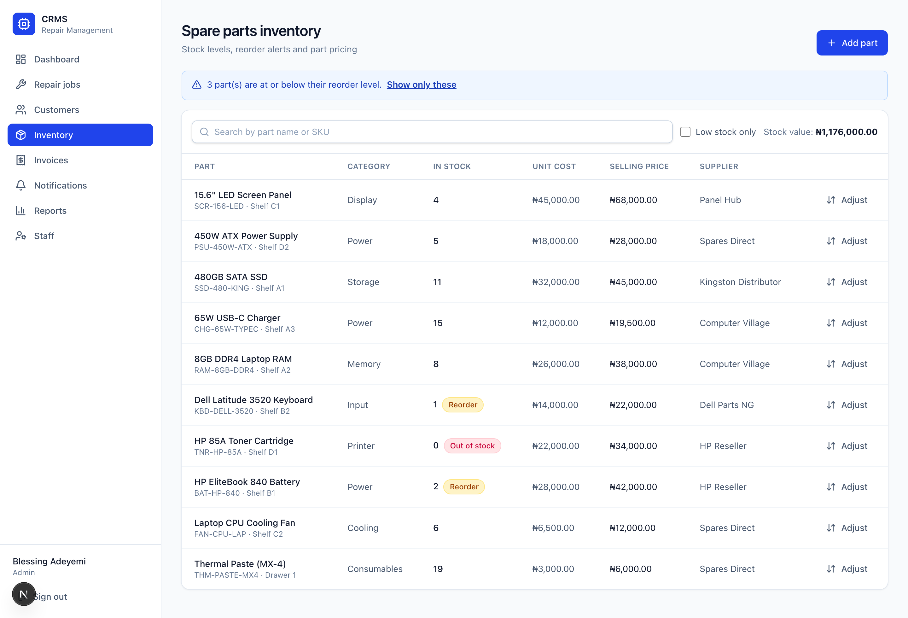
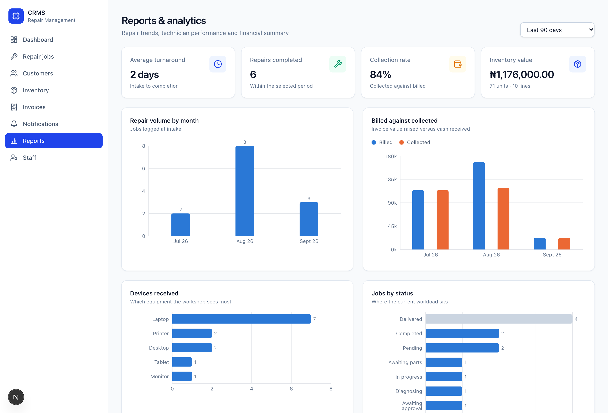
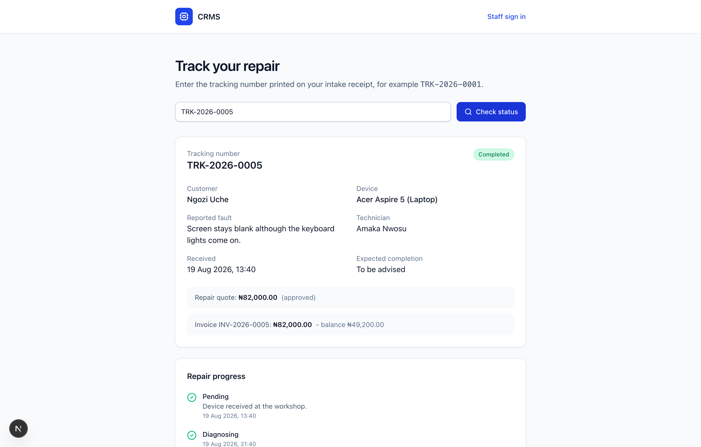

User Guide — how to use the software
Everything you need to log a repair, track it, bill it and report on it.
Read this once and you will know the whole system.
This is a Computer Repair Management System (CRMS). It replaces the paper records and scattered spreadsheets a repair workshop normally uses. Everything lives in one place:
The system also messages the customer automatically every time their repair moves forward, and gives them a page where they can check the status themselves.
Open this address in any web browser, on a computer or a phone:
| Staff (workshop) sign in | https://blessing-communication-technolog.vercel.app |
|---|---|
| Customer repair tracking | https://blessing-communication-technolog.vercel.app/track |
There are two kinds of user. Staff sign in. Customers do not.
| Role | Password | What they can do | |
|---|---|---|---|
| Administrator Blessing Adeyemi |
admin@crms.test |
password123 |
Everything: all repairs, staff, inventory, invoices and reports. |
| Technician Tunde Bakare |
tunde@crms.test |
password123 |
Only the repairs assigned to them. |
| Technician Amaka Nwosu |
amaka@crms.test |
password123 |
Only the repairs assigned to them. |
| Technician Ibrahim Sani |
ibrahim@crms.test |
password123 |
Only the repairs assigned to them. |
To leave, click Sign out at the bottom-left of the screen. You stay signed in for 8 hours.

The sign-in screen. Customers use the link at the bottom instead.
The dark menu down the left-hand side is how you move around. It is always there. On a phone, tap the ☰ button at the top to open it.
| Menu item | What you use it for |
|---|---|
| Dashboard | Your home screen. How many jobs are open, what needs attention, money in and out, and low stock warnings. |
| Repair jobs | Every work order. Search, filter by status, and open any job to work on it. |
| Customers | Register a customer and see everything they have ever brought in. |
| Inventory | Spare parts: how many are left, prices, and adding new stock. |
| Invoices | Bills raised, what has been paid, what is still owed. Printable. |
| Notifications | Every message the system has sent to a customer. |
| Reports Admin only | Charts and figures: repair trends, revenue, technician performance. |
| Staff Admin only | Create, enable and disable the accounts that can sign in. |

The Dashboard. The four boxes at the top are your at-a-glance numbers.
TRK-2026-0006 open the full repair job.
Every repair follows the same path through the system:
| # | Stage | What happens |
|---|---|---|
| 1 | Device comes in | You fill the intake form. The system creates a tracking number and texts/emails the customer. |
| 2 | Technician diagnoses | The technician inspects it and writes down what is actually wrong. |
| 3 | Quote is sent | You enter labour and parts cost. The customer is told the price. |
| 4 | Customer approves | You record their approval. Only then can work start. |
| 5 | Repair is done | Parts are fitted — stock reduces automatically. Work is written up. |
| 6 | Invoice and payment | The invoice builds itself from the labour and parts recorded. You take payment. |
| 7 | Device handed back | Mark it delivered. The job is closed. |
TRK-2026-0014 and appears at the top of the job. They use it to check
progress themselves without phoning you.

The Repair jobs list. Search by ticket, customer, brand or serial number.
Click any ticket number to open its work screen. Everything about that repair is here.

The repair work screen. Customer, device and running cost stay on the right.

An invoice, ready to print.
10) or a negative number to write stock off (e.g. -2), and give a reason.
Inventory. Red and amber tags mark parts that are out or running low.
You normally do not need this — the intake form registers a new customer for you. But if you want to add someone in advance, click Customers then Register customer. Opening a customer shows every repair they have ever brought in.
Click Reports. Use the box at the top right to change the period.
| What you see | What it tells you |
|---|---|
| Average turnaround | How long a repair takes from arrival to completion. |
| Collection rate | How much of what you billed has actually been paid. |
| Repair volume by month | Whether the workshop is getting busier or quieter. |
| Billed against collected | Money raised versus money received, month by month. |
| Devices received | Which equipment you see most, so you stock the right parts. |
| Technician performance | Jobs handled, completion rate and speed per technician. |
| Fastest-moving parts | What you use most and should never run out of. |

Reports. Hover any bar on screen to see the exact figure.
A technician with open jobs cannot be deleted. Reassign their jobs first. You also cannot remove your own administrator access, so you can never lock yourself out.
The coloured tag on every job tells you where it is.
| Status | Meaning |
|---|---|
| Pending | Device received, waiting for a technician to look at it. |
| Diagnosing | A technician is inspecting it now. |
| Awaiting approval | The price has been sent. Waiting for the customer to say yes. |
| In progress | Approved, and the repair is being done. |
| Awaiting parts | Paused while a spare part is sourced. |
| Completed | Fixed and ready for the customer to collect. |
| Delivered | Handed back. The job is closed. |
| Cancelled | The repair will not go ahead. |
Customers never sign in and never need an account. Give them their tracking number and this address:
https://blessing-communication-technolog.vercel.app/track
TRK-2026-0005.They see only their own repair — no other customer's details, no internal notes and no staff information. On top of this, the system emails them automatically at every stage, so most of the time they do not need to check at all. Everything it has sent is listed under Notifications.

What the customer sees. No login, no account, no phone call needed.
| Action | Administrator | Technician |
|---|---|---|
| See all repair jobs | Yes | Only their own |
| Log a new device at intake | Yes | Yes |
| Update diagnosis and status | Yes | On their own jobs |
| Quote and record approval | Yes | On their own jobs |
| Fit spare parts to a job | Yes | On their own jobs |
| Reassign a job to someone else | Yes | No |
| Register and edit customers | Yes | Yes |
| Add parts or change stock levels | Yes | No (can view) |
| Generate invoices, take payment | Yes | Yes |
| View reports | Yes | No |
| Create and disable staff accounts | Yes | No |
| What you see | What to do |
|---|---|
| "Invalid email or password." | Check for typing mistakes and stray spaces. The password is case sensitive. |
| You keep being sent back to the sign-in screen | Your 8-hour session ran out. Sign in again. |
| "A job cannot move from X to Y." | Repairs must follow the proper order. Use one of the buttons the system offers you. |
| "The customer must approve the quote before work can begin." | Click Approve quote and record who approved it first. |
| "Only 3 of that part left in stock." | You asked for more than you have. Reduce the quantity or add stock under Inventory. |
| "Complete the repair before generating an invoice." | Mark the repair Completed, then invoice it. |
| "That is more than the outstanding balance." | You cannot take more than is owed. Check the balance shown on the invoice. |
| "This customer has 3 repair jobs and cannot be deleted." | Deliberate — deleting them would destroy repair history. |
| "No repair found with that tracking number." | Check the number. It looks like TRK-2026-0005. |
| Reports or Staff are missing from the menu | You are signed in as a technician. Those are administrator-only. |
password123,
and never share database or server settings with anyone who only needs to use the website.
This guide contains sign-in details for people, not system settings.